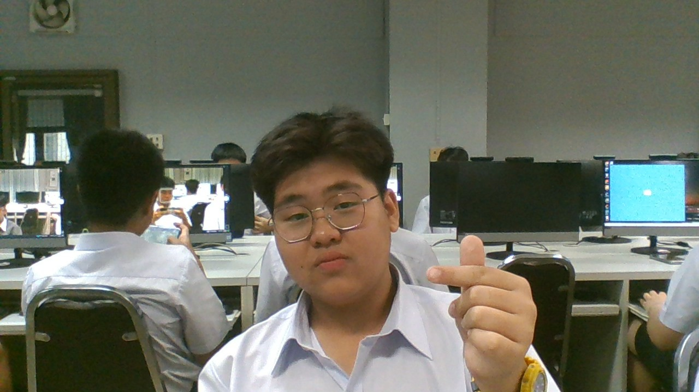

นายนัชชา ยืนยงอนันต์ : ขอบคุณที่คอยสั่งสอนผมตลอดทั้งปี คอยอบรมดูแลอย่างดี
บทเพลงที่มอบให้ครู
"

นายสุวิทย์ งามผักแว่น : ขอบคุณที่คอยสอน IS และคอยแบ่งขนมให้ผมกินครับ
บทเพลงที่มอบให้ครู

น.ส.สุนิสา เพ็งสุข : ขอบคุณที่สอนสังคม อย่างดีมากครับ
บทเพลงที่มอบให้ครู

นางสาววิยดา ไตรยวงค์ : ขอบคุณที่สอนเทคโนผมตอนม.1 และสอนวิชาเลือกผมตอนม.2
บทเพลงที่มอบให้ครู
"

น.ส.ธัญวรินทร์ ฟั่นคุ้ม : ขอบคุณที่สอนคณิตผม
บทเพลงที่มอบให้ครู

จัดทำโดย : เด็กชายชลนที หาญเชิงค้า 213 เลขที่ 18